크루네 첨부 메뉴 수리 근거
메뉴가 입력 영역 전체 위로 뜨던 기준점을 + 버튼으로 옮겼어요. 수정 전 158px였던 간격을 버튼 바로 위 8px로 맞췄어요.
320·390 폭, 라이트·다크, Chromium·WebKit에서 업무·크루방·자료 프로젝트의 위치와 잘림을 확인했어요. 사진·파일·링크 선택, 바깥 닫기, Escape, 창 크기 변경, 초안 유지도 검사했어요.
전후 사진은 같은 격리 시험 자료예요. iPhone 실기기 촬영으로 주장하지 않아요. 운영 사진은 별도로 표시했고 대화 내용은 가렸어요.
320px · 라이트
수정 전 · 버튼과 158px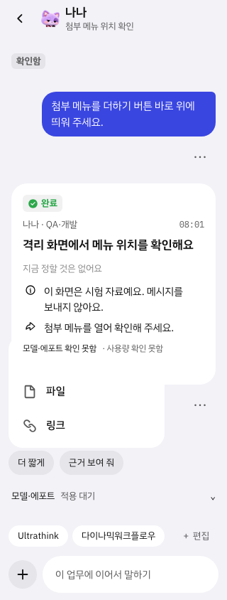
수정 후 · 버튼 위 8px 320px · 다크
수정 전 · 버튼과 158px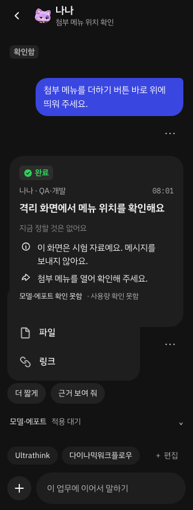
수정 후 · 버튼 위 8px 390px · 라이트
수정 전 · 버튼과 158px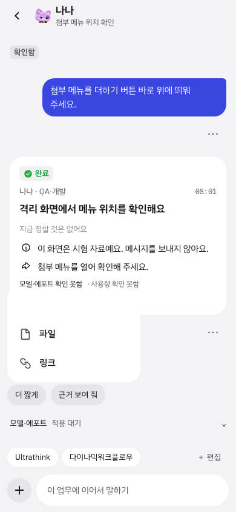
수정 후 · 버튼 위 8px 390px · 다크
수정 전 · 버튼과 158px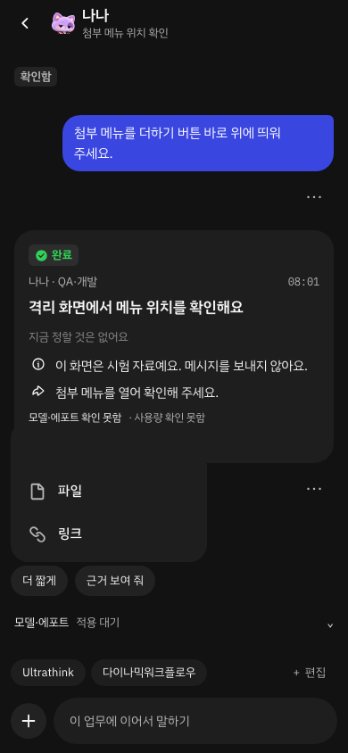
수정 후 · 버튼 위 8px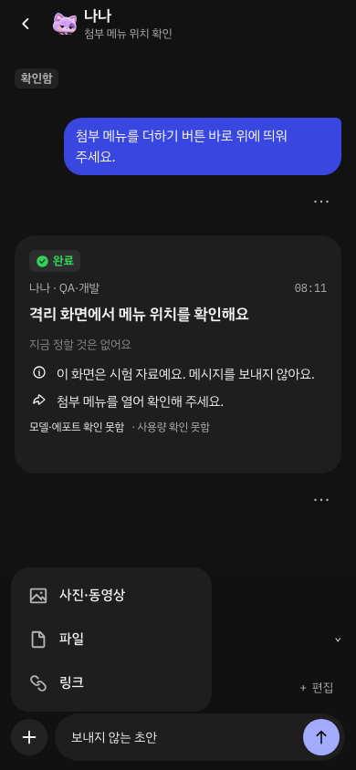
운영 반영
운영 앱 · 26.10.27 08:09
커밋 빌드와 운영 JS·CSS 해시 일치. 운영 데이터 쓰기 시도 0건. 운영 촬영은 메뉴 열기·닫기만 사용.
운영 · work · 320px · light · 간격 8px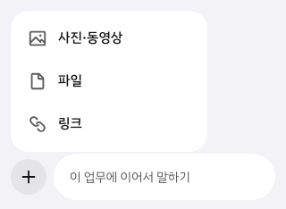
운영 · room · 320px · light · 간격 8px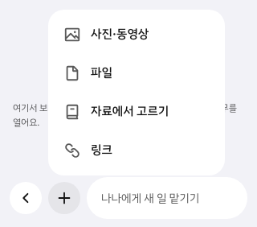
운영 · work · 320px · dark · 간격 8px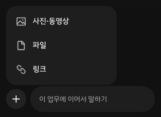
운영 · room · 320px · dark · 간격 8px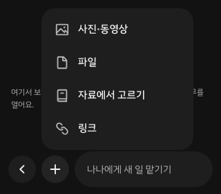
운영 · work · 390px · light · 간격 8px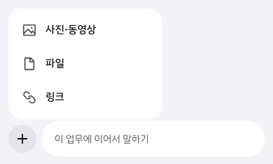
운영 · room · 390px · light · 간격 8px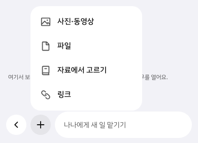
운영 · work · 390px · dark · 간격 8px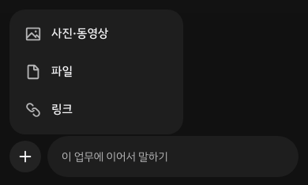
운영 · room · 390px · dark · 간격 8px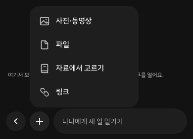
다른 화면·브라우저 사진
chromium · room · 320px · lightchromium · project · 320px · light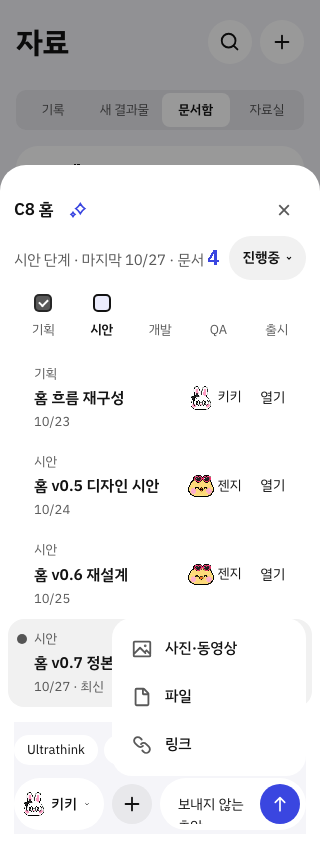
chromium · room · 320px · dark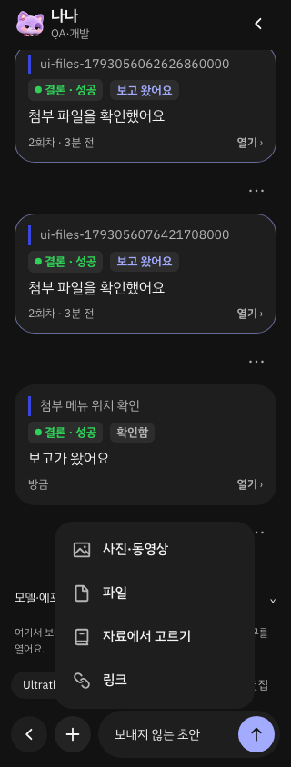
chromium · project · 320px · dark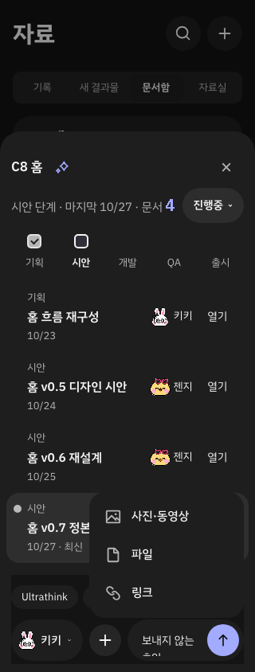
chromium · room · 390px · light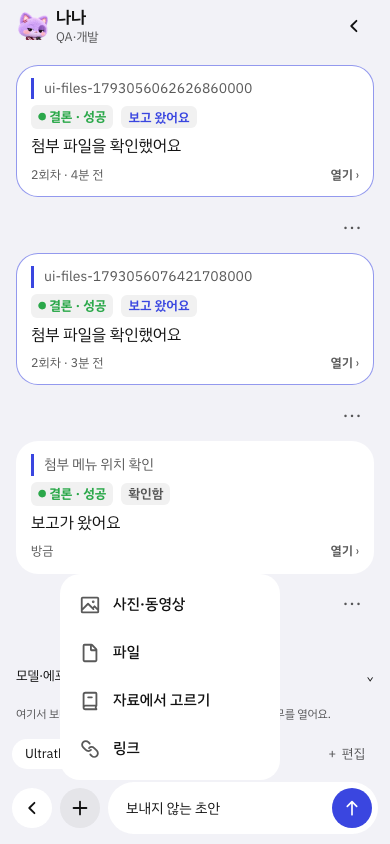
chromium · project · 390px · lightchromium · room · 390px · dark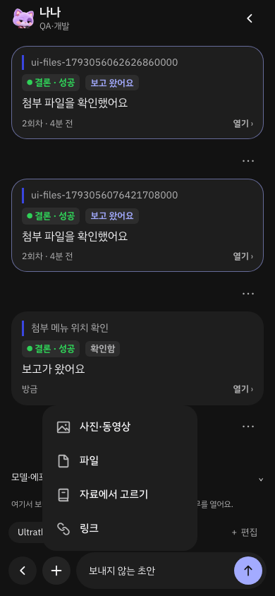
chromium · project · 390px · dark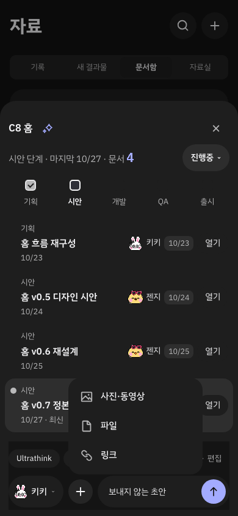
webkit · work · 320px · light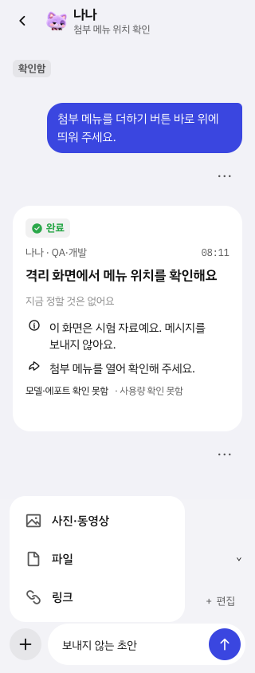
webkit · room · 320px · light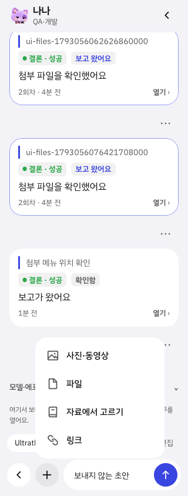
webkit · project · 320px · light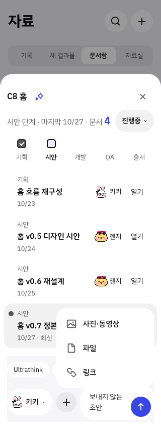
webkit · work · 320px · dark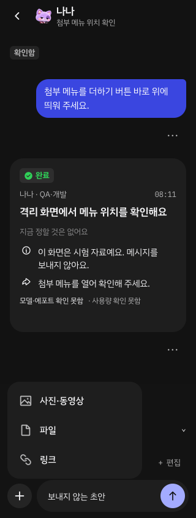
webkit · room · 320px · darkwebkit · project · 320px · dark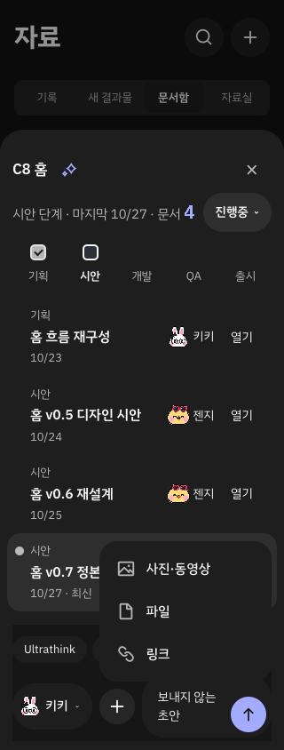
webkit · work · 390px · light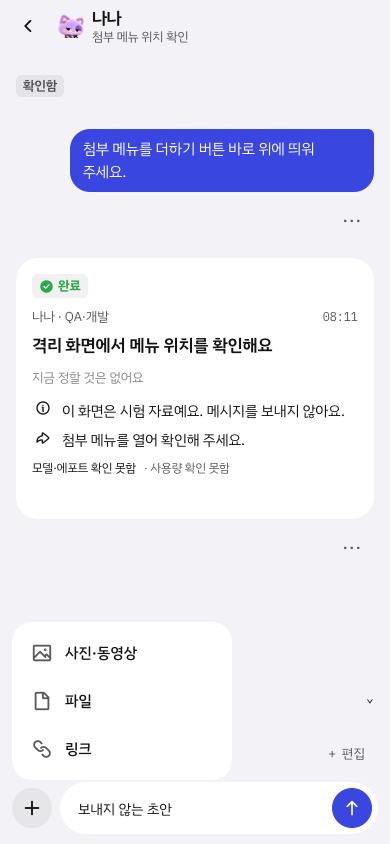
webkit · room · 390px · light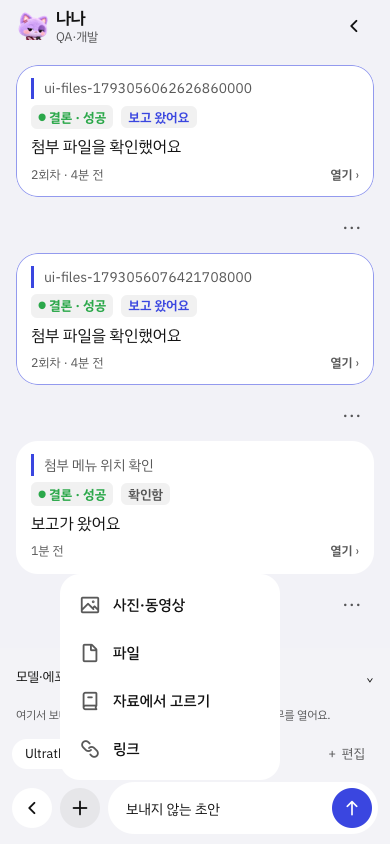
webkit · project · 390px · light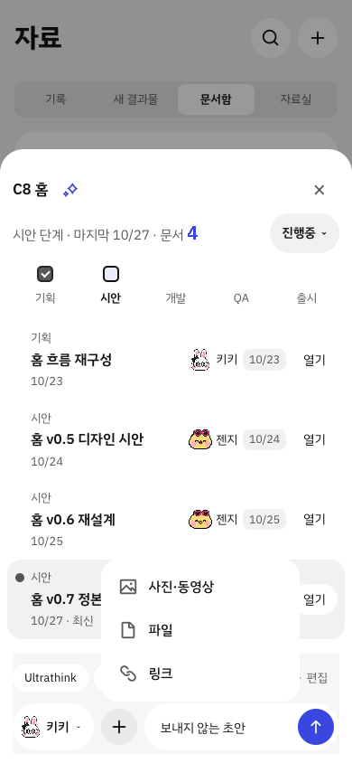
webkit · work · 390px · dark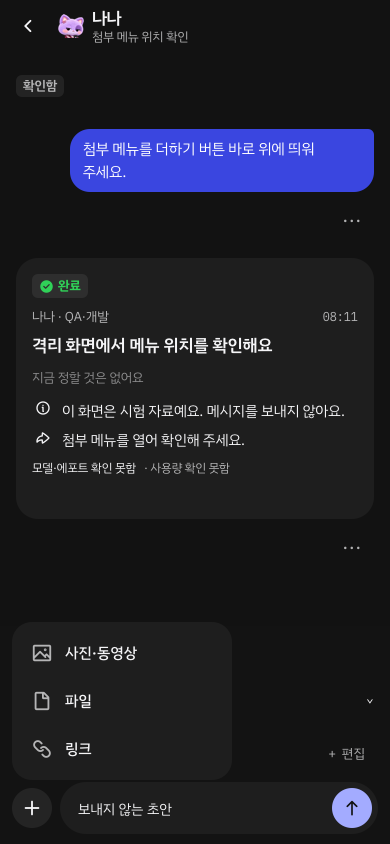
webkit · room · 390px · darkwebkit · project · 390px · dark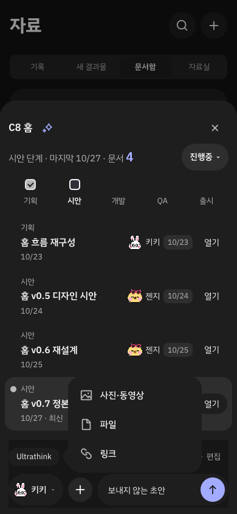